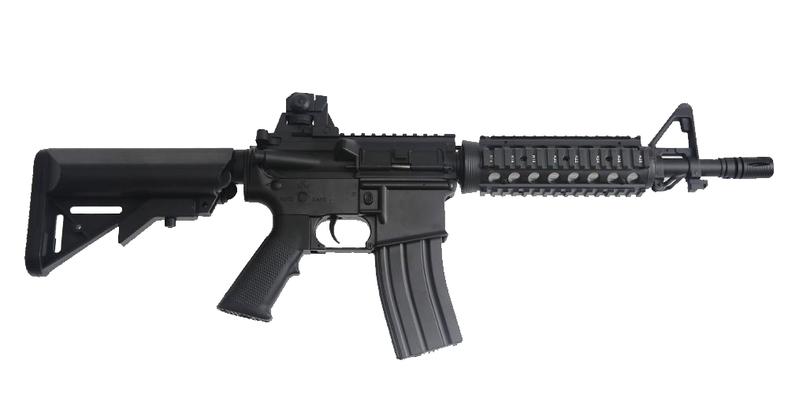
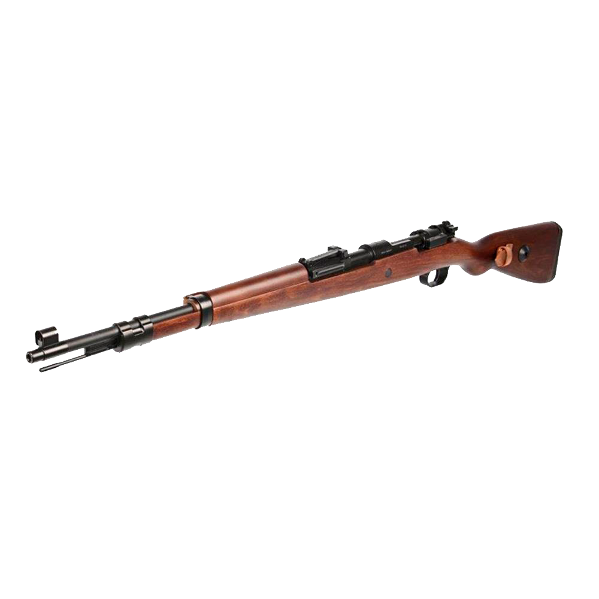

Nosotros
Mision
“Conforme a lo establecido en la Constitución de la República, proporcionar de manera responsable armas, municiones, explosivos y otros productos o servicios; con calidad y a la vanguardia del mercado para satisfacción de nuestros clientes
Vision
“Para el 2022 convertirnos en la mejor experiencia de compra de armas, municiones, explosivos y otros productos o servicios, superando las expectativas de nuestros clientes.
Valores
Servicio al cliente: Para nosotros representa una filosofía de trabajo que nos permite a lo interno de la organización integrarnos, actuando con sentido de urgencia.
Armas
M4
 La M4 es una familia de fusiles de asalto automáticos en versión carabina, derivados del fusil AR-15, fabricados por la empresa Colt de Estados Unidos. Es el arma principal de infantería estándar del Ejército de los Estados Unidos, y suele ser utilizada por numerosas unidades policiales de élite, como los SWAT.KAR98K
 Un Mauser Kar 98k. El Mauser Kar 98k o Karabiner 98 Kurz (con frecuencia abreviado Kar 98k, K98 o K98k) es un fusil de cerrojo que emplea el cartucho 7,92x57 mm, fue adoptado como fusil estándar de infantería en 1935 por la Wehrmacht. F ue uno de los desarrollos finales de la larga línea de armas militares Mauser.BENELLI
 Benelli Armi S.p.A. es un fabricante de armas de fuego italiano.
Sus armas son usadas en todo el mundo por civiles, policías y cuerpos militares. En 1967, los hermanos Benelli, propietarios de la fábrica de motocicletas,
fundaron la Benelli Armi en Urbino, debido a su gran pasión por la caza
Benelli Armi S.p.A. es un fabricante de armas de fuego italiano.
Sus armas son usadas en todo el mundo por civiles, policías y cuerpos militares. En 1967, los hermanos Benelli, propietarios de la fábrica de motocicletas,
fundaron la Benelli Armi en Urbino, debido a su gran pasión por la caza